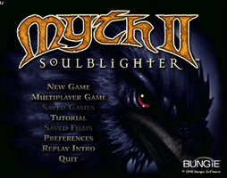
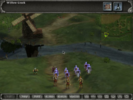
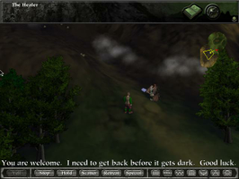

Myth 2
Archivierte Anleitung
Dieser Artikel wurde archiviert, da er - oder Teile daraus - nur noch unter einer älteren Ubuntu-Version nutzbar ist. Diese Anleitung wird vom Wiki-Team weder auf Richtigkeit überprüft noch anderweitig gepflegt. Zusätzlich wurde der Artikel für weitere Änderungen gesperrt.
Zum Verständnis dieses Artikels sind folgende Seiten hilfreich:
Myth II: Soulblighter ist ein Strategiespiel. Die eigene Strategie und Taktik entscheiden über den Ausgang der Schlachten. Mit eigenen Einheiten (Bogenschützen, Heiler, Schwertkämpfer, Zwerge und Zauberer) bekämpft man den dunklen Lord Soulblighter. Alles beginnt im Dorf Willow Creek, wo sich eine handvoll Soldaten auf einer verhängnisvollen Patrouille befindet... Im Spiel entsteht eine gruselige Atmosphäre, die zu längerem Spiel animiert.
Neben dem Basisspiel gibt es eine kostenlose Erweiterung.
|  |  |  |
| Menü | Spielszene | Erweiterung |
Installation¶
Die Installation [1] erfolgt in mehreren Schritten, welche im Folgenden behandelt werden. Weitere Informationen zur Installation findet man im Artikel Loki.
Zuerst legt man die CD-ROM ins Laufwerk, wechselt dorthin und ruft die Datei setup mit auf. Die folgenden Fragen werden alle mit Y beantwortet und Fullinstall (~640MB) gewählt.
Alternativ den Installer myth.2_1.3e-english_x86.mojo.run (Beta-Version) von liflg.org 
 verwenden.
verwenden.
Nun wird der Patch eingespielt.
Patch¶
Patch myth2-1.3e-x86.run von hier herunterladen und mittels des folgenden Befehls installieren [2]:
/bin/bash myth2-1.3e-x86.run
Nach einer positiven Rückmeldung spielt man zuletzt das Update ein.
Update¶
Hierfür das Update myth2-1.3e-cdrom-x86.run von hier herunterladen und wie gewohnt einspielen [2]:
/bin/bash myth2-1.3e-cdrom-x86.run
Nachdem alles eingespielt wurde, muss im Installationsverzeichnis lediglich der Ordner cutscenes umbenannt werden um Spielabstürze zu verhindern. Nun kann das Spiel mittels myth2 gestartet werden [4].
Weitere Startparameter, die auch kombiniert genutzt werden können:
| Startoptionen | |
| Parameter | Beschreibung |
-w | Spiel startet im Fenstermodus. |
-s | Soundwiedergabe wird gestoppt. |
-h | weitere Optionen |
Erweiterung¶
Ebenfalls 1999 erschien Myth II - Chimera , welches ein kostenloses Plugin für Myth II darstellte. Das Szenarienpack chimera-1.0.run kann man von hier beziehen. Die Installation unterscheidet sich nicht von den anderen Dateien [2]:
/bin/bash chimera-1.0.run
Nach erfolgreicher Installation kann man beim Start eines neuen Spiels zwischen "Willow Creek" und "The Heeler" auswählen.
Demo¶
Eine Demoversion des Spiels kann nach dieser Anleitung installiert werden.
Problembehebung¶
Installation¶
Da die Archive mit Hilfe einer älteren Syntax komprimiert wurden gibt es mitunter Probleme beim Dekomprimieren. Dies umgeht man mit:
_POSIX2_VERSION=199209 sh ./setup
Ebenso beim Patch und dem Update verfahren.
Sound knattert¶
Das Spiel verwendet zur Soundwiedergabe OSS - dies kann auf neueren Systemen zu einem knatternden Sound führen. Eine mögliche Lösung besteht darin die Startoptionen zu variieren und den Sound zu deaktivieren.

Infobox¶
| Myth II - Soulblighter | |
| Originaltitel: | Originaltitel meist Englisch |
| Genre: | Rollenspiel |
| Sprache: |  |
| Veröffentlichung: | 1998 |
| Publisher: | Bungie Studios |
| Systemvoraussetzungen: | Prozessor mind. 133 MHz - mind. 32 MB RAM - mind. 100 MB Festplattenspeicher |
| Medien: | CD (1) |
| Strichcode / EAN / GTIN: | 689524126917 |
| Läuft mit: | nativ |
- Erstellt mit Inyoka
-
 2004 – 2017 ubuntuusers.de • Einige Rechte vorbehalten
2004 – 2017 ubuntuusers.de • Einige Rechte vorbehalten
Lizenz • Kontakt • Datenschutz • Impressum • Serverstatus -
Serverhousing gespendet von